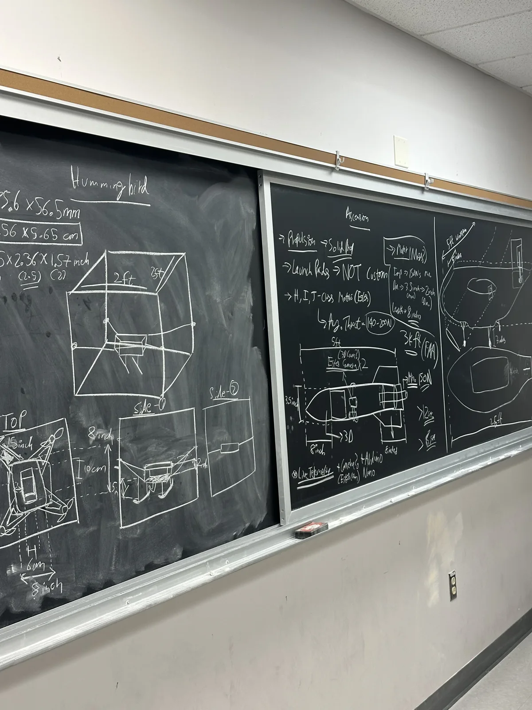

I led three student engineering teams: a high-altitude sounding rocket, a sustainable airplane, and a fully 3D-printed modular autonomous drone.

My role
I recruited students, advised technical initiatives, and coordinated requirements, budgets, prototypes, and schedules across more than 20 students.
- Presented engineering progress and plans to sponsors and advisors.
- Secured more than $2,500 in funding from Blue Origin.
- Organized research events connecting students with UIUC faculty.